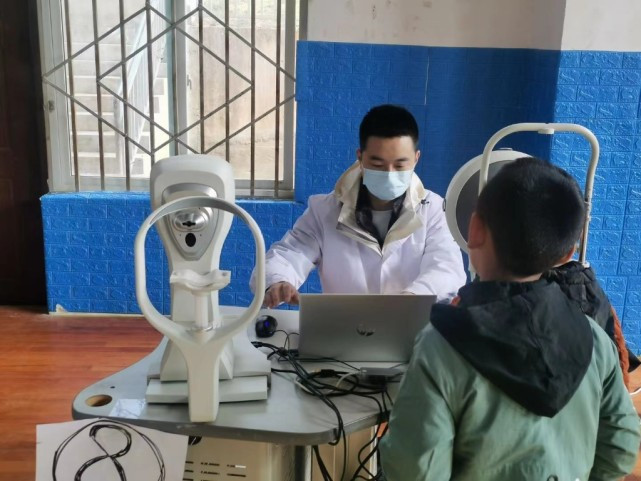
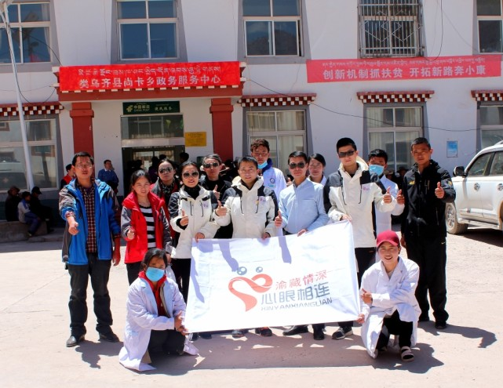

“追光者”们到西藏义诊。重医附一院供图
“有孩子眼睛近视了，竟然直接佩戴父亲的近视眼镜。”
重庆医科大学附属第一医院眼科副主任胡柯教授，拥有20多年的眼科从业经历，他和团队发现，在西南许多偏远地区，儿童青少年眼部保健知识缺乏，眼疾未得到及时筛查、诊治等状况令人心忧。为守护这些孩子的眼健康，胡柯团队发起一个名为“守护‘瞳’真·追光无限”的公益项目。他们连续5年奔赴西南偏远地区开展眼健康义诊，其中四入雪域高原。 四入雪域高原 让一些孩子拥有属于自己的眼镜 |
|  |
为小学生筛查。重医附一院供图
自2019年开始，胡柯和同事们携带物资、医疗设备等，先后四次走进海拔3000米以上的藏区义诊，西藏昌都卡若区、类乌齐县、察雅县等许多地方都留下他们的足迹。
“因为眼部保健知识缺乏，许多藏区孩子有不同程度的眼表问题。”参加义诊的眼科医生张琪告诉记者，他们在西藏昌都义诊中发现，许多孩子患有结膜炎干眼等眼表疾病，眼表卫生情况较差，且绝大部分孩子并没有得到治疗。 因缺乏专业的验配眼镜机构或家长意识薄弱，一些近视的孩子并没有佩戴眼镜，或者佩戴家长的眼镜。 为此，义诊团队每一次入藏，都会为近视的孩子免费配眼镜。仅2021年9月，义诊团队就深入昌都市多地的9所学校义诊，共筛查中小学生2136人，免费为孩子们验配眼镜337副。
当藏区的孩子们拿到属于自己的近视眼镜，家长会用普通话一字一句地说：“太感谢你们了！”那种眼睛里流露出的真诚和淳朴，令义诊团队难忘。
除了帮助孩子，义诊团队还为藏区的高龄白内障患者送去光明。 仅2020年8月，在八宿县，他们两天之内就筛查白内障患者200余名，实施免费白内障手术55台。“那一次，很多藏族同胞是从上百公里外的牧区赶来。为了帮他们节省一天的住宿费，我们就一直做手术到深夜11点。”打造互联网平台 建立儿童青少年眼健康档案 |
|  |
为小学生筛查。重医附一院供图
现场义诊，并不能长远解决西南偏远地区儿童青少年的眼健康问题。
为此，胡柯和团队推出的“守护‘瞳’真·追光无限”公益项目，开始发力于打造“西南偏远地区儿童青少年眼部发育、眼健康监测、眼病诊治三位一体的互联网整合平台”，平台辐射云南、贵州、四川、西藏、重庆。同时，这也将是一个眼健康和眼病防治的社会宣传教育平台。
胡柯介绍，通过这个互联网整合平台，专家可以通过“远程诊疗”的方式，为西南偏远地区的医院免费提供虹膜身份识别、综合验光、眼底照相以及裂隙灯检查等远程新技术，并远程指导开展眼科手术。平台还将通过线上小程序发布宣教视频、PPT及科普文章，搭建“医患”“患患”线上论坛平台，并汇总个人检查报告。 针对儿童青少年，该平台提供日常用眼保健建议、就诊者线上咨询、重症协助诊疗等服务。截至目前，“守护‘瞳’真·追光无限”项目团队已进行 1000余万人次线上科普，累计义诊15000多人次，免费验配眼镜1000余副。未来，该平台计划为西南地区儿童青少年建立眼健康档案，并通过“互联网+医疗”的方式帮助更多孩子。 |
| |